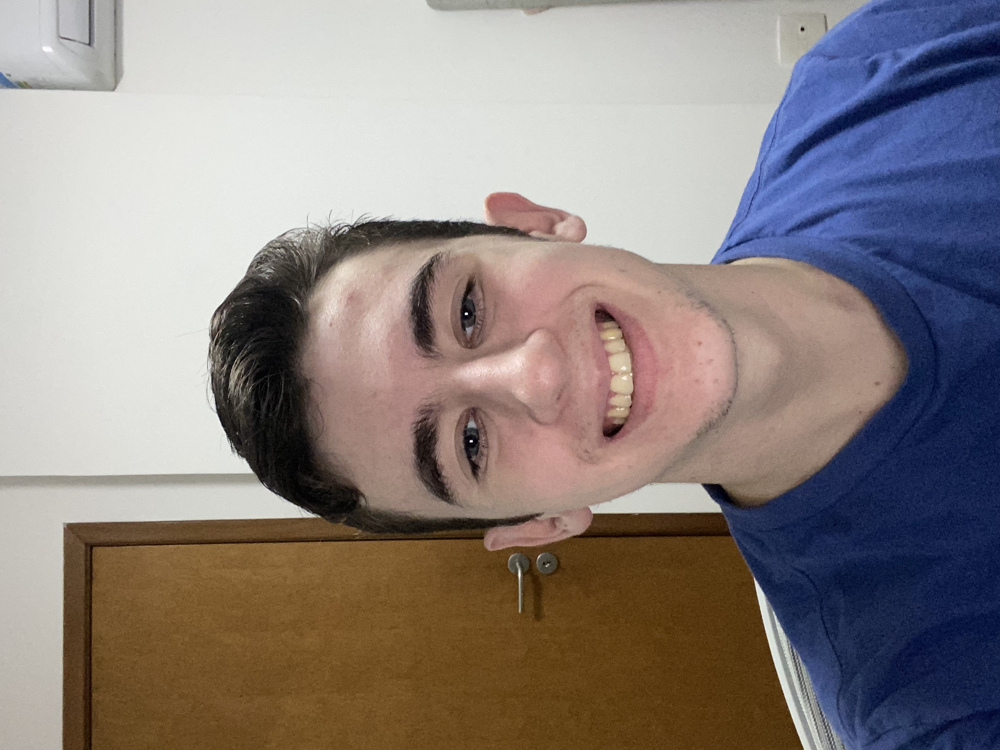

Quem sou eu?
Olá, meu nome é Vinícius Melo, sou estudante de Engenharia da Computação, atualmente to no 3º período, e me considero uma pessoa divertida que sempre tenta ver o copo meio cheio. Atualmente sou monitor de algoritmos e estruturas de dados, e almejo me tornar desenvolvedor no CITi, tanto para melhorar minhas hard skills, quanto minhas soft skills.
Meus gostos
Eu me considero uma pessoa até que simples, tenho 4
coisas que gosto de fazer:
- Praticar e as vezes assistir basquete e futebol
- Ver filmes e séries
- Jogar videogame (essa eu gosto bastante)
- Tirar foto dos meus gatitos (proxima sessão eu falo deles)
Filmes e Séries:
- Game of Thrones
- La La Land
- Um Contratempo
- Megamente
- Duna 2
Times:
- Santa Cruz☠️
- Los Angeles Clippers
- OKC
Jogos:
- Sekiro
- Uncharted 3
- God of War Ragnarok
- It takes two
- The last of us
Minha família
A coisa mais importante pra mim é minha família,
então mesmo que não seja literalmente sobre mim,
decidi falar um pouquinho deles.
Do lado esquerdo estão meus dois gatitos 🐈, em cima
Virgulino, que é um gatinho tímido, resgatado na
garagem aqui de casa, e muito lorde, em baixo
tá Nina, que é uma buchinha preguiçosa, mas muito
brincalhona, e cheia de personalidade.
No lado direito, em cima, está a família com meu pai,
que sempre me deu exemplo e me ensinou o que é certo
e errado. Embaixo está a família com minha mãe, que sempre esteve do meu lado
e me deu muito amor, carinho e sempre esteve disponível
para qualquer tipo de conversa. E no meio está eu com
minha namorada, que está comigo nas horas boas e ruins,
e eu amo muito 💙. Por fim tanto em cima quanto
em baixo está minha irmã menor, que me irrita muito
as vezes, mas eu não viveria sem ela.